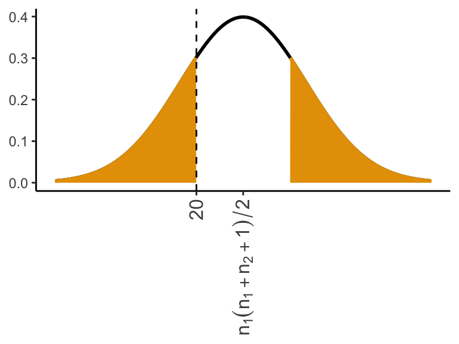

(22/40 - 1/2 - 1/80) / sqrt(1 / (40 * 4))[1] 0.4743David Gerard
July 14, 2025
A numeric variable where distances between points make sense
A variable where order matters, but not the specific numbers
A categorical variable with no ordering
The Sign test is a non-parametric version of the paired \(t\)-test
Wherever you would use a paired \(t\)-test, you can instead use a sign test.
Suppose we just know (or use) that for two paired observations \((A, B)\), that either
\(A > B\), \(A < B\), or \(A = B\)
Example: Two ointments (A and B). Randomly apply one to left arm and the other to right. See which ointment produces more redness for each person.
For \(n = 45\), suppose we saw:
\(X_i\) = redness on arm A
\(Y_i\) = redness on arm B
\(d_i = X_i - Y_i\)
\(\Delta = \text{median}(d_i)\)
\(H_0\): \(\Delta = 0\)
\(H_A\): \(\Delta \ne 0\)
\(d_i\) not observed, only observe whether \(d_i > 0\) (A > B), \(d_i < 0\) (A < B), or \(d_i = 0\) (A = B)
Let \(n = \#(d_i > 0) + \#(d_i < 0)\)
Let \(X = \#(d_i > 0)\)
If \(H_0\) were true, \(X \sim \text{Binom}\left(n, \frac{1}{2}\right)\)
Why: “success” = \(d_i > 0\)?
\[\begin{align*}
\mathbb{P}(\text{success}) &= \mathbb{P}(d_i > 0) \\
&= \mathbb{P}(d_i > \text{median}(d_i)) \text{ (if $H_0: \Delta = 0$ true)}\\
&= \frac{1}{2} \text{ (definition of median)}
\end{align*}\]
So just use binomial methods on the sign of the differences (normal or exact)
Let \(X = \#(A > B)\) and \(n = \#(A>B) + \#(A<B)\)
\(H_0\): \(\Pr(A > B) = \Pr(A < B)\)
If \(H_0\) is true, then \[ X | n \sim \mathrm{Binom(n, 1/2)} \]
The sign test is equivalent to assuming \(X \sim \mathrm{Binom}(n, p)\) and testing \(H_0: p = 1/2\).
Use Binomial methods (exact or normal).
Example: If \(X \sim \text{Binom}\left(n, \frac{1}{2}\right)\) (the null is true), then \[
\frac{X}{n} \sim N(p, p(1-p)/n) = N\left(\frac{1}{2}, \frac{1/2(1-1/2)}{n}\right) = N\left(\frac{1}{2}, \frac{1}{4n}\right)
\]
Plugging in \(X = 22\) and \(n = 40\), we calculate our \(z\) statistic:
\[ z = \frac{\hat{p} - 1/2 - 1/(2n)}{\sqrt{1/2(1-1/2)/n}} = \frac{22/40 - 1/2 - 1/80}{\sqrt{1/(40 \times 4)}} \]
We compare this \(z\)-statistic to a standard normal distribution
This agrees with the value from prop.test()
# A tibble: 1 × 1
p.value
<dbl>
1 0.635binom.test(). Sum all probabilities less probabe than or equally probable to our observed value of \(X = 22\):The Wilcoxin Signed-Rank test is also an alternative to the paired $t$-test
It’s more powerful than the sign test, but makes some additional assumptions, making it slightly less robust.
Idea: still use \(d_i\), but take into account the rank of the magnitudes
Intution: suppose we observed \(d_i\): -10, -7, -6, -5, 1, 2, 3, 4
Idea:
Example:
| \(d_i\) | \(|d_i|\) | Rank \(|d_i|\) |
|---|---|---|
| -10 | 10 | 8 |
| -7 | 7 | 7 |
| -6 | 6 | 6 |
| -5 | 5 | 5 |
| 1 | 1 | 1 |
| 2 | 2 | 2 |
| 3 | 3 | 3 |
| 4 | 4 | 4 |
Let \(R\) be the rank sum (sum of the ranks of the positive numbers).
If \(H_0: \Delta = 0\) is true, then, theoretical results are that:
\[\begin{align*} E[R] &= \frac{n(n+1)}{4}\\ \text{Var}(R) &= \frac{n(n+1)(2n+1)}{24} \end{align*}\]
\(R \sim N\left(E[R], \text{Var}(R)\right)\) for large \(n\)
Compare \(R\) to null distribution to get \(p\)-value
Exact methods exist when \(n\) is small
Variations exist when there are ties in \(d_i\)
Note: The null is really that \(\Delta = 0\) and \(d_i\) are symmetric (though possibly non-normal).
Might reject \(H_0\) if \(\Delta = 0\) but \(d_i\) are skewed
So really only testing \(H_0: \Delta = 0\) if \(d_i\) are symmetric (checkable via histograms)
If symmatry is not a good assumption, use the sign test.
Wilcoxon signed-rank test in R
This is also called the Mann–Whitney \(U\) test.
It’s a nonparametric alternative to two-sample \(t\)-test
We want to test if the distribution is shifted in one group or the other
Let \(F_1\) be the CDF of group 1
Let \(F_2\) be the CDF of group 2
Hypotheses:
\(H_0\): \(F_1 = F_2\)
\(H_A\): \(F_1(x) = F_2(x + \Delta)\) for some \(\Delta \ne 0\)
Assume distribution is same in each group except one is shifted over (for \(H_1\))
Procedure: Rank all values (not magnitudes like before)
Add up ranks in one group
Let \(R_1\) = sum of ranks in group 1
Under \(H_0\):
\[\begin{align*} E[R_1] &= \frac{n_1(n_1 + n_2 + 1)}{2}\\ \text{Var}(R_1) &= \frac{n_1 n_2 (n_1 + n_2 + 1)}{12} \end{align*}\]
By CLT, for large \(n\), \(R_1 \sim N(E[R_1], \text{Var}(R_1))\)
So compare to this distribution to get a \(p\)-value
Example: \(X\) = -3, -1, 0, 1, 3 \(Y\) = -2, 2, 4
| Sample | Value | Rank |
|---|---|---|
| X | -3 | 1 |
| Y | -2 | 2 |
| X | -1 | 3 |
| X | 0 | 4 |
| X | 1 | 5 |
| Y | 2 | 6 |
| X | 3 | 7 |
| Y | 4 | 8 |
Sum ranks for group X: \[ R_1 = 1 + 3 + 4 + 5 + 7 = 20 \]

Intuition for when \(n_1 = n_2\):
Since \(R_1 + R_2 = \sum_{i=1}^{n_1 + n_2} i = \frac{(n_1 + n_2)(n_1 + n_2 + 1)}{2}\) just need to look at distribution of \(R_1\).
For small \(n\), an exact distribution of \(R_1\) (when \(H_0\) is true) is available
Modifications exist when there are ties
Can use this to compare ordinal data
Example: Visual acuity for individuals with dominant form of retinitis pigmentosa (RP) vs. visual acuity for sex-linked RP